Technical Support Frequently Asked Questions
Technical Support Frequently Asked Questions Automotive
• General Instrumentation FAQ's
• Speedometer FAQ's
• Tachometer FAQ's
• Fuel Level FAQ's
• Oil Pressure / Water Temperature FAQ's
• Fan Controller FAQ's
• Cruise Control FAQ's
General Automotive Instrument Systems FAQ's
|
If I disconnect the battery will I lose all my settings? |
| The turn signals on my HDX/RTX gauges don’t activate, even in DEMO mode, what is wrong? In the Setup menu, navigate to DISPLAYS select TURN REMIND and set to GAUGE. This will activate the turn signals within the gauge face. If OEM is selected it will turn off the gauge face indicators. |
| How do I change the settings on my instrument system? All settings are made within the setup menu. • Within the VFD3, VHX and RTX Series: SWITCH 1 (SW1) needs to be pressed WHILE turning on the key. Once the key is on, you may release the switch (SW1). • With the HDX Series: both switches are held simultaneously for setup menu access. For a full manual which contains the set menu option list more detail, access this from the Technical Support section of this website. |
| I’d like to display some extra information in my instrument system, but I don’t want to add a bunch of extra gauges, is that possible? This is very possible, our BIM Series of expansion modules is designed to exactly that. This video will provide an overview of what is possible: 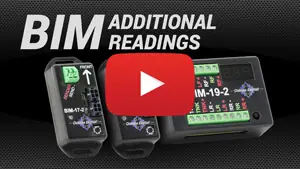 |
| What size wire do I need to use for the instrument cluster installation? 20 AWG is sufficient for most wiring. However, 18 AWG wire is recommended if running the fuel sender wiring so the resistance of the wire will not affect the fuel ohms reading. |
|
Can I put my gauge cluster into DEMO mode, for display at an event, or testing purposes? Yes. |
|
Can I mount my control box in the engine compartment? |
| Do I need to be concerned about moisture getting into my control box? Mount your control box inside the cabin of the vehicle away from AC ducts, which can cause condensation. Additionally, inspect the cowl and underdash area for any sign of previous moisture leaks, addressing those before mounting the control box. Finally, finish off your installation with a “Drip Loop” on all wires running into your control box. This will avoid moisture from following the wiring into the control box connections. 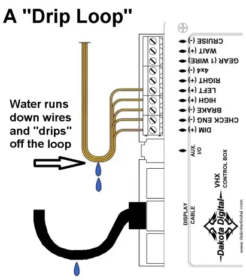 |
| Can the Gear Shifter Position be displayed inside of my gauge cluster? Yes, all Dakota Digital full instrument systems include a gear shift indicator for Automatic transmissions. To utilize this function, just add the GSS-3000. This popular addition is described in this video: 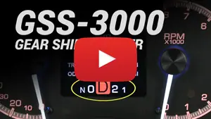 |
| Do I need to install the switch assembly that came with my VFD3/VHX/RTX gauges? Yes, the switches are needed to enter the setup, perform calibration and access normal-use functionality. The switches should be installed so they are easily accessible by the driver. Connect the red wire to “SW1 (-)” and the green or white wire to “SW2 (-)” terminal on the control module. The black wire should be connected to the “ADJ –“ terminal on the control box. 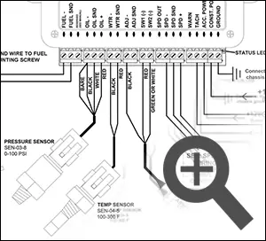 |
| How do I set the clock on my instrument system? To set the clock, there is no need to enter the setup menu, this can be done through normal operation. 1. Tap the control switch until the clock is display 2. Hold Switch #2 until the hour begins to flash 3. Tap to change the hours. 4. Hold to save the hours and the advance to the minute selection. 5. Repeat this process, with a 2 second hold, to save your time selection. For additional information, view Dakota Digital’s video, ”Setting the Clock on Dakota Digital Instruments” 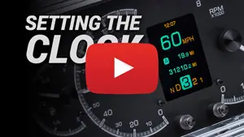 |
| What is included in the instrument system package? All instrument systems will contain a display head, control module as well as sensors and harnesses for each. For additional information, view Dakota Digital’s video “Unboxing a Dakota Digital Instrument System” 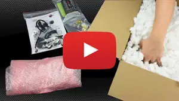 |
| The switches on my HDX gauges don’t move when I try to push them. Are they stuck? The Dakota Digital HDX series gauges come with “Integrated Capacitive Touch Switches” just the touch of your finger activates the switch. 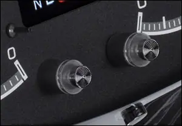 |
| I have a number of indicator lights (icons) that show up on my gauges, what do they mean? The chart below shows the indicators that are within the face of each instrument system. 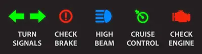 |
|
How can I change the brightness of the gauge cluster at night? All Dakota Digital instrument systems allow for programmable lighting intensity through the setup menu. With full digital systems (VFD3), the lighting will remain at full intensity during daylight hours and is programmable at night (when the headlights are activated). With analog systems (VHX, HDX and RTX), the backlighting brightness can be configured for both day and night operation. The DIM-1 provides rotary control of any backlight intensity, when the headlights are activated. This video provides an in-depth look at the backlight brightness options: 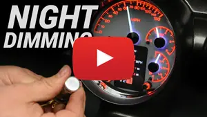 |
| Can I control my gauges, or set them up wirelessly?
The HDX and RTX Series can be easily configured for wireless control. Download the Dakota Digital App on your Apple or Android tablet, then take a look at this how-to video: |


Speedometer FAQ's
|
May I shorten the wires from my speed sensor harness? |
|
How do I calibrate the speedometer (AUTO CAL)? 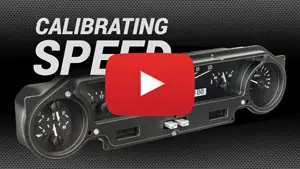 |
| When calibrating the Speedometer, AUTO CAL states to drive 1 mile, however my gauges were built in a metric configuration (KM/H), how far do I drive? 1 Kilometer will be driven to in the AUTO CAL mode. |
| My speed sensor has 3 wires where do I hook them up on my control box? The black wire connects to “SPD-“, the White wire to “SPD SND” and the Red wire to “SPD +” 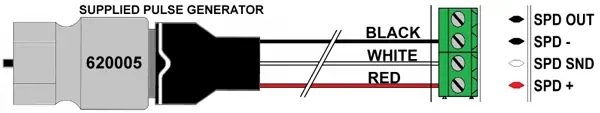 |
|
I have a 2 wire VSS sensor where do I hook up the wires on my control box? 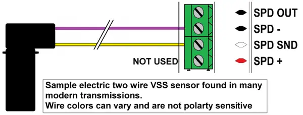 |
|
Can I use just a single wire out of my ECU/ECM or TCU Speed Output for my speed signal? 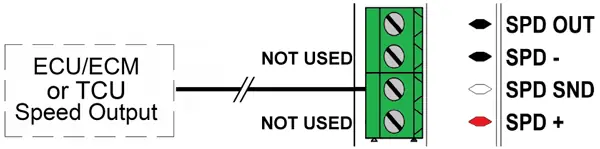 |
|
I have a 2 wire pulse generator for my speed signal, where do I hook the wires to my control box? 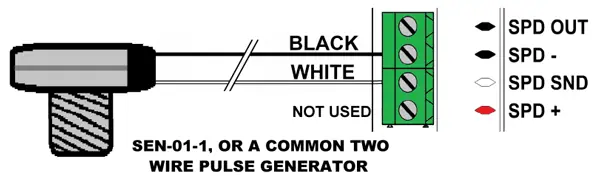 |
|
Is my Speedometer GPS? |
Tachometer FAQ's
|
Where do I get a tach signal for my gauges I just installed in my Diesel engine vehicle? |
|
I have a HEI Distributor, can I get my Tach signal off of it for my control box? Yes, run a single wire from Tach Terminal on the HEI Distributor to the “TACH” input on your control module. Add a second wire from the “BAT” terminal on the HEI Distributor to a key on switched 12V supply. 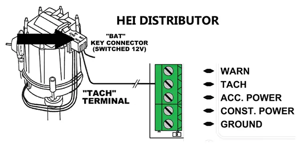 |
| Which terminal on my ignition coil do I use for my Tach signal? Run a wire from the negative post of the coil to “TACH” on the control module. 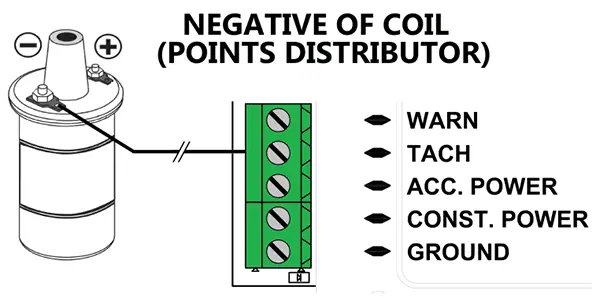 |
| My ECU/ECM has a Tachometer output wire, can I use this? Yes, just route this single wire to the “TACH” terminal on the control module. |
|
I have an MSD Ready to Run distributor, can the tachometer connect to this? 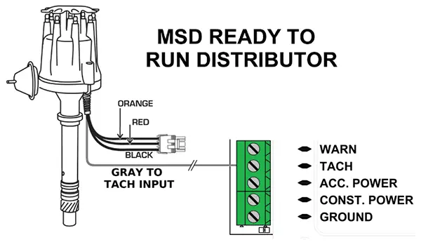 |
|
I have a MSD 6A/ 6AL ignition module in my car does it have a tach signal I can hook to my control box? 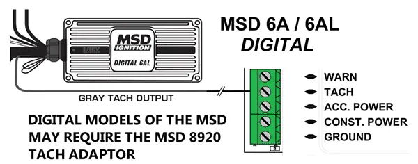 |
Fuel Level FAQ's
|
Do I need to run a dedicated ground to the control box or gauge from my fuel sender? |
||||||||||||||||||||||||||||||||||||||||||||
|
How do I know what fuel sender I have in my vehicle? The chart below gives a list of the most common senders and will cover most all vehicle applications. The FUEL TEST mode found in most Dakota Digital instrument systems can also help to narrow this down. For more information, view the video ”Fuel Sensor Setup”. 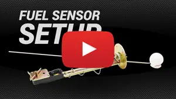
|
Oil Pressure / Water Temperature FAQ's
|
Is it OK to lengthen the wires for the Oil Pressure and Water Temperature? Yes, wire length will not affect the Oil Pressure or Water Temperature readings. Soldering and heat shrinking the extension harness is the recommend, if lengthening is required. When routing this harness, take care to isolate this from ignition components or anything which induce electrical noise. |
|
Can I replace the stock senders for water and oil in my LS motor with yours? Generally not. Most computers will need to see the signal from the stock senders. You can install our senders along with the stock senders, or consider our BIM-01-2 to get SPEED, TACH, ENGINE TEMP, OIL PSI (3-wire sender required) and other information from the OBD II diagnostic port. |
|
Can I use my stock Oil Pressure and Water Temp sender, or “T” into these wires to share with the computer? It is recommended to use the supplied Dakota Digital sensors. This ensures correct readings and reduces the risk of component damage. |
|
My display is giving me error codes of “EE”, “--“and “85” what do they mean? Oil (voltage based) |
| I have a Small Block Chevy and the oil pressure sender doesn’t fit, do I need a different sender? No, this can be a simple relocation of the sensor. At your local hardware store, pick up a short 1/8” NPT pipe with a 45 or 90 degree elbow. Depending upon your scenario, this will provide the proper clearance. 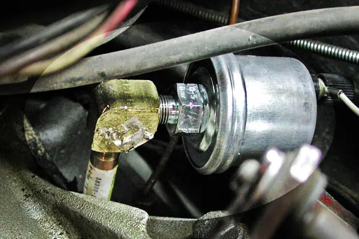 |
| Does it matter where I mount my water temp sender? It is recommended to mount your temp sender in the water flow exiting the engine near the thermostat. This will give you the most accurate reading; cylinder head mounting locations tend to read higher. |
| Where should the water temp sender be placed on my LS engine? The LS motor will have an available port on the rear of the passenger side cylinder head. This location uses a 12mm threading, so the included 1/8” NPT to 12mm bushing will be utilized for simple fitment. This video will show you this process: 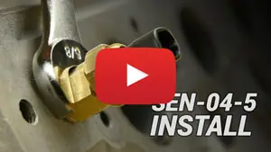 |
|
Do I need to bleed my cooling system in my car after installing my Temp Sender? |
Fan Controller FAQ's
|
I have PAC-2750/2800BT, can I hook up and control more than one fan or a dual speed fan? 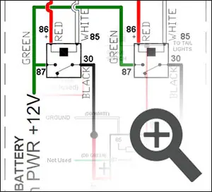 |
|
Can I mount my fan controller in the engine compartment? |
| Can I use the app to control the PAC-2800BT? The Dakota Digital Accessories app can make installation a breeze! Here is an overview of the process: 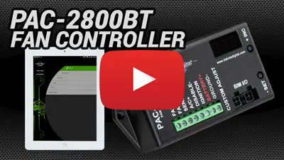 |

Cruise Control FAQ's
|
My CRS-2000 or CRS-3000 Cruise Control will not engage, I have LED taillights and your Cruise Control, do I need an extra relay? 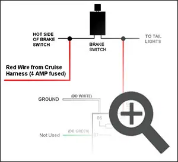 |
|
How will I configure the setup switches on my new CRS-2000 or CRS-3000 Cruise Control kit? 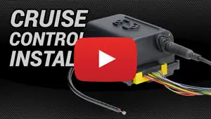 |
|
Can I setup my VCM cruise control with my smart phone or tablet? |
|
Will the VCM cruise control work with my EFI system? |
|
I have LED taillights do I need to add an additional relay with my VCM cruise control? |
|
Do I need to purchase a special cruise control handle to work with my VCM Cruise? |
|
What PPM (piles per mile) speed signal do I need for my VCM cruise? |
|
What is the minimum set speed for my VCM cruise? |
|
My VCM will not engage, how can I figure out what is wrong? |

Not sure what fits?
Talk to a tech in Sioux Falls, Monday to Friday, 8am to 5pm Central.